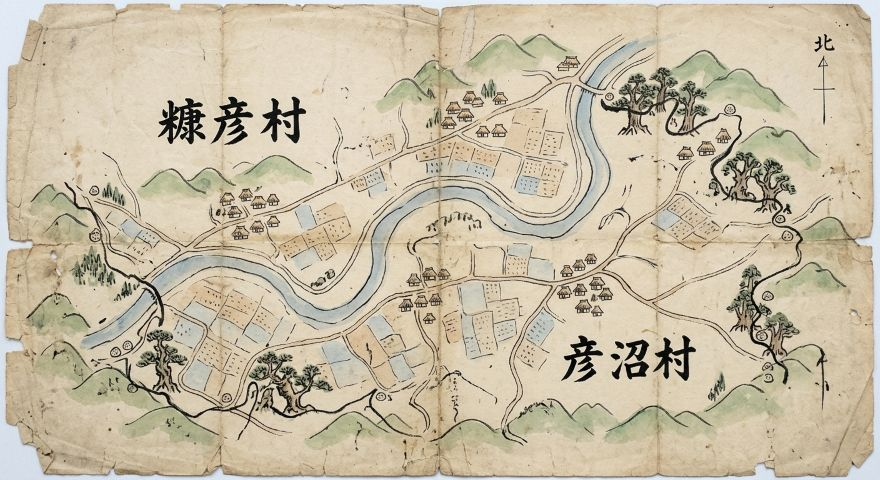
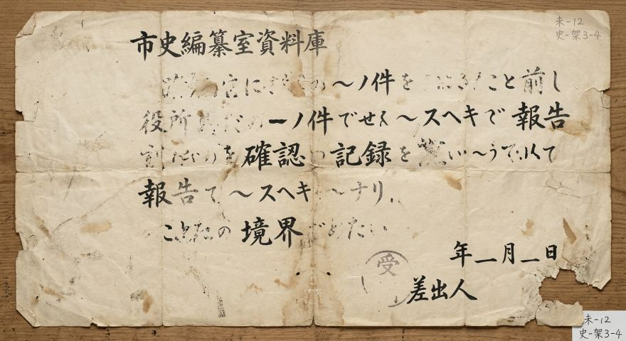
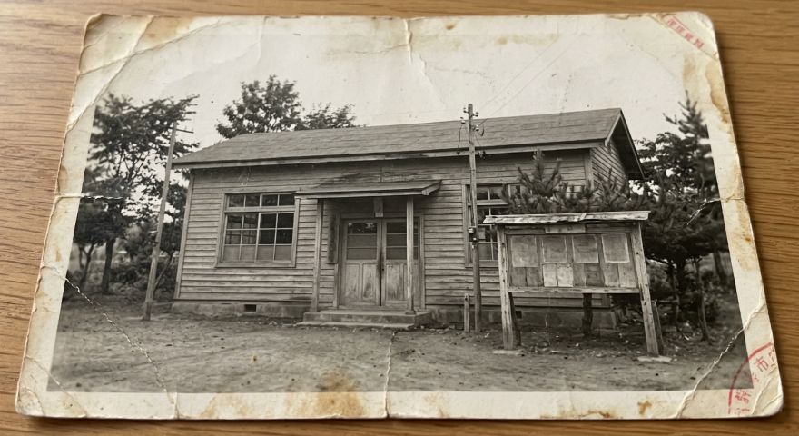
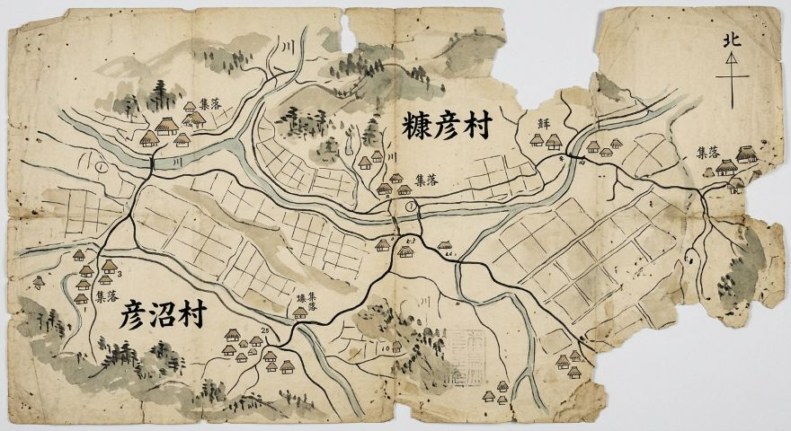
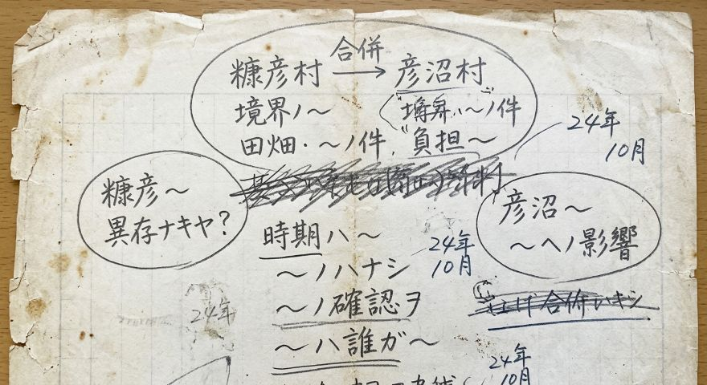

その中には、年代や出所がわからないもの、内容を確認できていないもの、複数の資料との関係が 明らかになっていないものもあります。これらの資料については、現在も調査・整理を進めています。
一方で、資料が整理されるまで公開しないのではなく、現在の状態そのものを記録として残すため、 一部を「未整理資料」として公開しています。
未整理資料について
未整理資料には、以下のようなものが含まれます。
- 年代を特定できない資料
- 作成者や入手経路が不明な資料
- 現在の市域との関係を確認できない地図
- 内容の一部しか読み取れない文書
- 複数の説がある出来事に関する資料
これらは、現時点では市の歴史を確定する資料として扱っていません。 新たな資料が確認された場合には、内容を見直すことがあります。
資料一覧

糠彦村・彦沼村境界図(年代不詳)
糠彦村と彦沼村の境界を示したものと考えられる古い地図。現在の地図との正確な対応関係は 確認されていません。
境界付近に、何らかの目印を示したと考えられる記号がありますが、その意味についても確認中です。
状態:未整理・年代不詳

差出人不明の行政文書
資料庫から発見された一枚の文書。作成者、作成時期、宛先はいずれも確認されていません。
文書の一部に「確認」「記録」「境界」などの文字が確認できますが、文書全体の内容は不明です。
状態:未整理・差出人不明

旧市役所と思われる建物の写真
古い写真資料の中から確認された建物写真。撮影場所および撮影時期は不明です。
建物の外観から、かつての市役所または行政施設である可能性がありますが、現在のところ 確認できていません。
状態:未整理・撮影場所不明

旧市域図(年代不詳)
「糠彦村」「彦沼村」の名称が記された古い地図。現在のピコぬ市域との対応関係について調査中です。
地図の一部が欠損しており、全体の範囲も確認できません。
状態:未整理・年代不詳

糠彦村・彦沼村 合併に関するメモ
糠彦村と彦沼村の「合併」に関する記述が残された手書きのメモ。正式な合併協議を示す資料であるかどうかは 確認されていません。
この資料だけでは、実際に合併が行われたことを確認することはできません。
状態:未整理・真偽確認中
市史編纂室より
未整理資料は、必ずしも正確な歴史を示すものではありません。
しかし、記録が不完全であることや、何を意味するのかわからないこともまた、現在残されている資料の 状態のひとつです。市史編纂室では、資料を都合よく解釈することなく、わかっていることと、まだ わからないことを分けて記録することを大切にしています。
新たな資料や情報が確認された場合は、順次整理・更新していきます。なお、資料の整理には時間がかかる 場合があります。
お問い合わせ
| 来所相談 | 市役所2階 記録政策課(予約制) |
|---|---|
| 電話相談 | ぬぬ-ぬかピコ-9696(きろくきろく) 平日9:00〜16:00 |